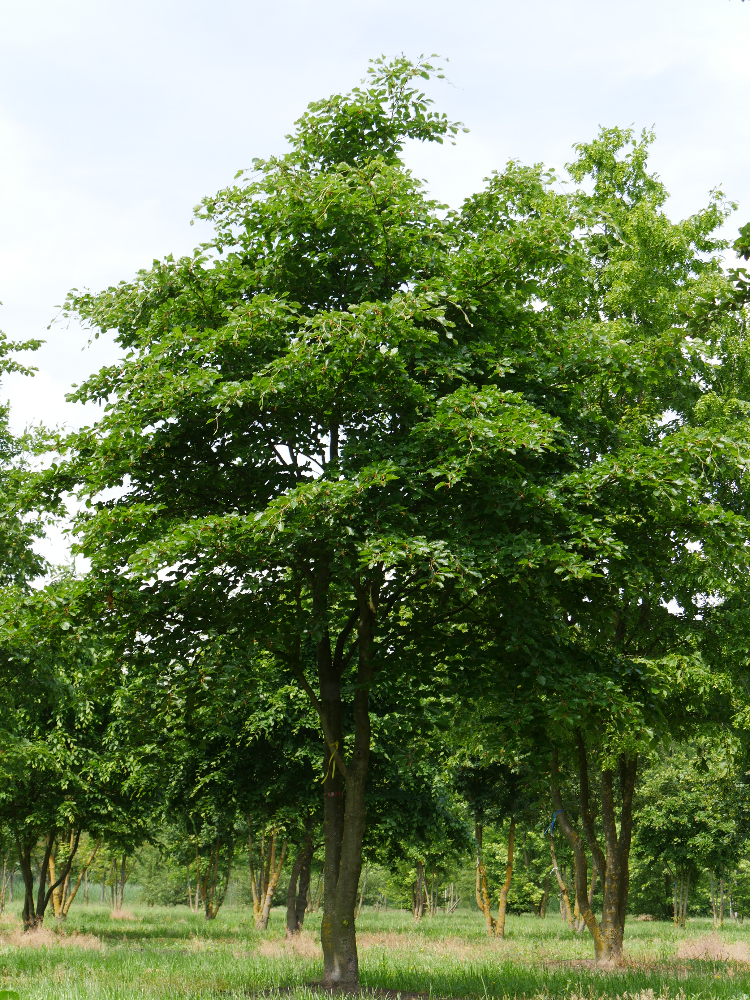
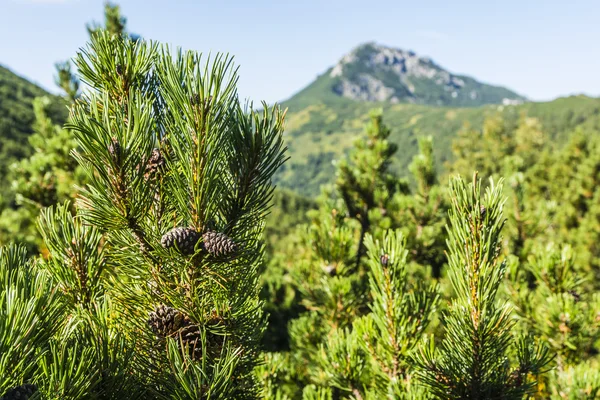
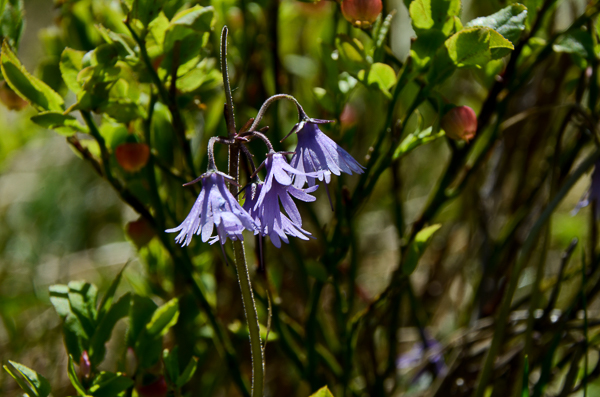
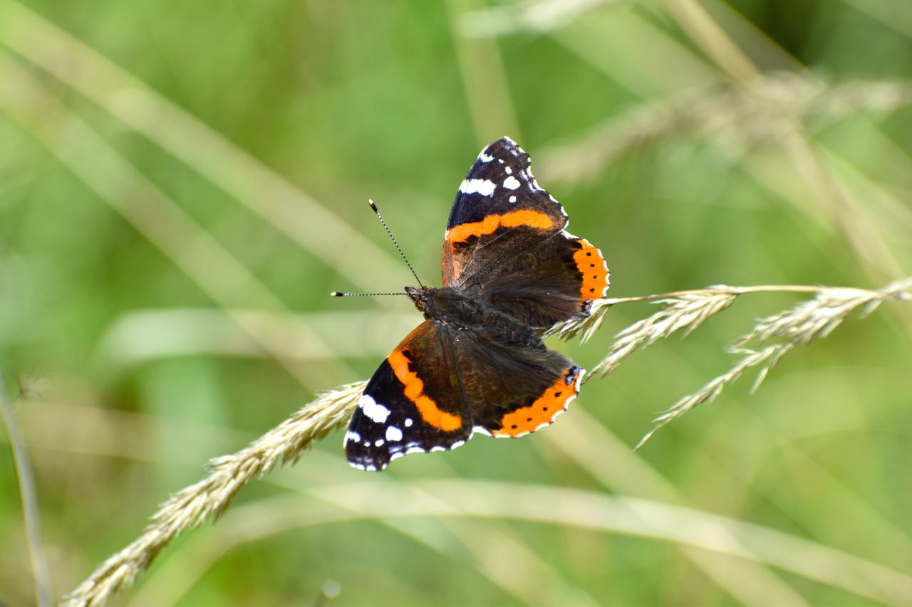
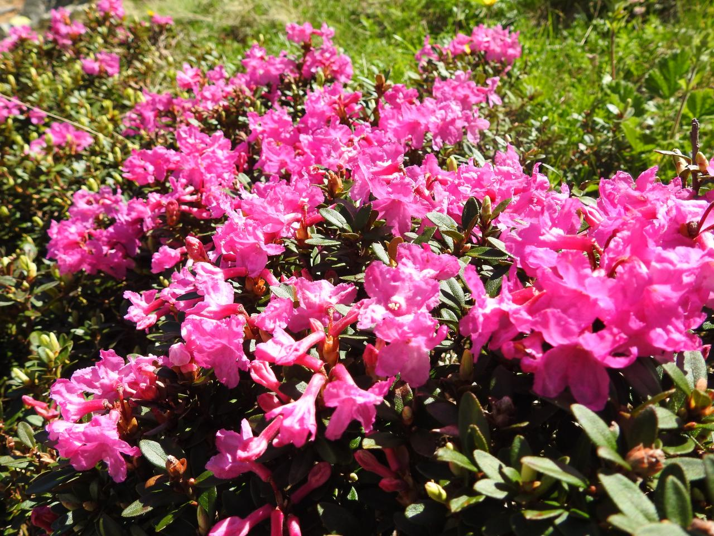
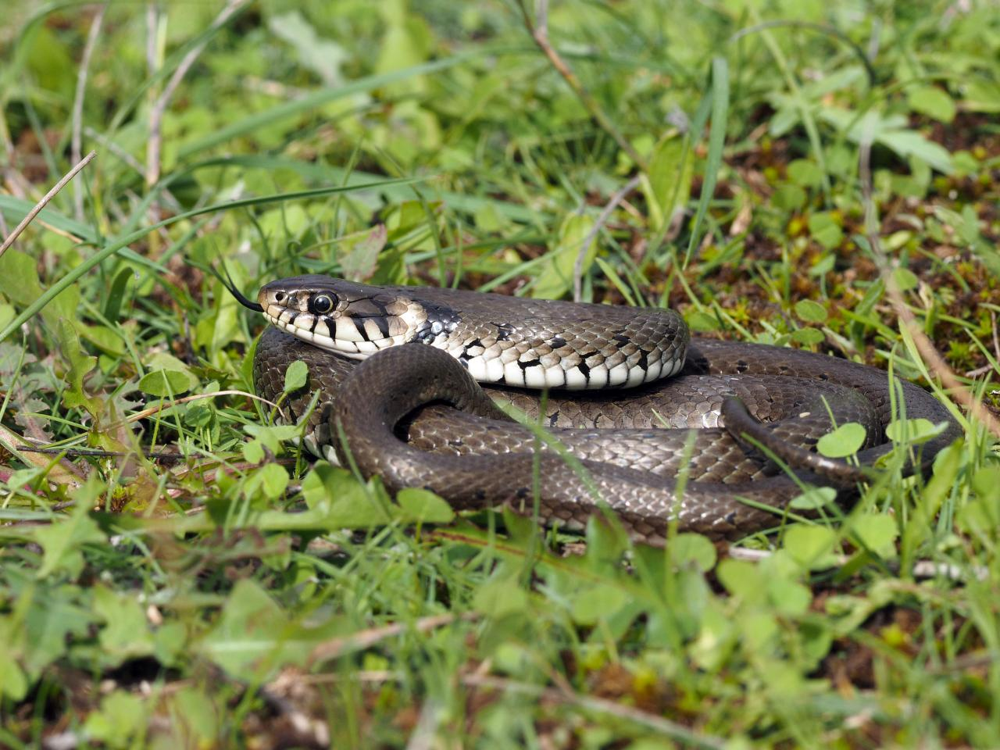
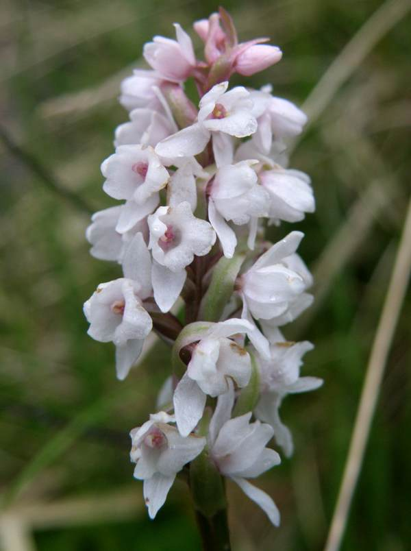
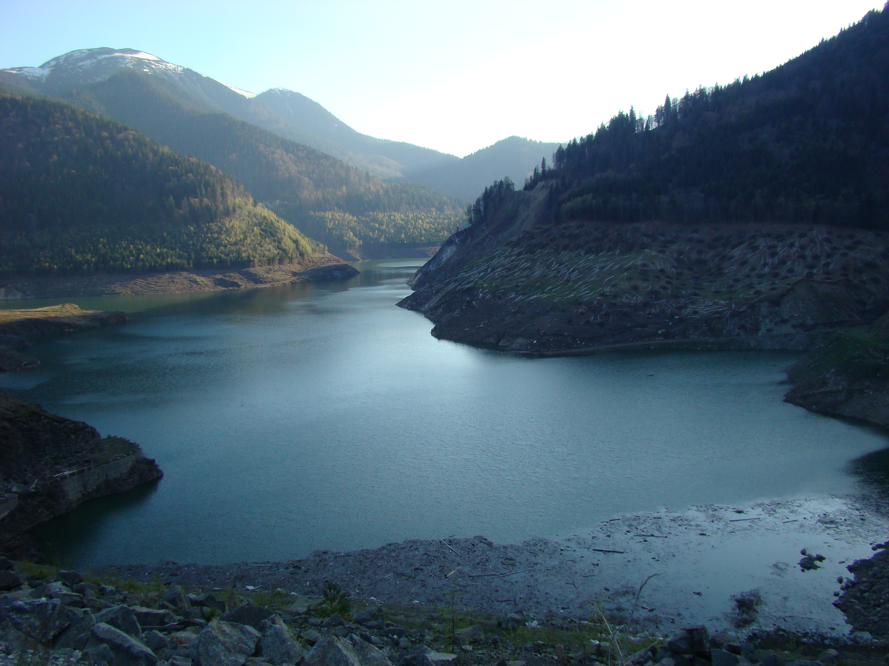

Introducere
Cele mai importante habitate pentru conservare în Parcul Național Retezat sunt reprezentate de
păşunile alpine şi subalpine, stâncăriile, jnepenişurile, aninişurile, pădurile de conifere boreale
şi subalpine, pădurile de foioase montane, habitatele acvatice şi tufărişurile de pe văile râurilor.
Per ansamblu, nota dominantă este dată de păduri,
care ocupă mai mult de jumătate din suprafața parcului.
Informatii oficiale - www.retezat.ro
Informatii oficiale - www.retezat.ro
Distributia peisajelor in Parcul National Retezat
HABITATE FORESTIERE
- Pădurile acoperă aproximativ 20500 ha, adică aproximativ 53% din suprafața parcului. Cele mai răspândite specii sunt fagul (Fagus sylvatica), molidul (Picea abies), jneapănul (Pinus mugo), bradul (Abies alba), paltinul (Acer pseudoplatanus), mesteacănul (Betula pendula), aninul verde (Alnus viridis), ulmul de munte (Ulmus glabra), scoruşul de munte (Sorbus aucuparia). Populația de zâmbru (Pinus cembra) este probabil cea mai reprezentativă din Munții Carpați.

Fagul (Fagus sylvatica)
- Cele mai răspândite păduri sunt molidișurile şi făgetele şi amestecurile de răşinoase cu fag. Pădurile de fag se găsesc între 800-1200 m altitudine, cele de amestec între 1200-1400 m, iar molidişurile între 1400-1800 m. Pădurile virgine şi cvasivirgine însumează o suprafață de care acoperă aproximativ 3500 ha şi reprezintă 17% din suprafața de pădure arondată în prezent Parcului. Limita superioară a pădurii se află în medie la 1800 m, dar uneori urcă la 1900 m (de exemplu pe Pârâul Șesele).
- Pădurile din Retezatul Mic prezintă o situație aparte, având în vedere caracteristicile abiotice din zonă (substratul calcaros, umiditate redusă, temperatură mai ridicată etc.).
HABITATE DE JNEPENIȘURI
- Jnepenişurile sunt zone cu formaţiuni arbustive de jneapăn (Pinus mugo) situate la limita superioară a pădurii, de unde urcă până la 2000- 2200 m acoperind zona dintre pădurile de limită şi păşunile alpine.
- Acoperă aproximativ 17% din suprafața parcului, având un rol ecologic important pentru conservare: stabilizează pantele abrupte şi protejază solul împotriva eroziunii. Dintre speciile caracteristice pentru zona jnepenişurilor menționăm: afinul (Vaccinium myrtillus), rotunjoarele (Homogyne alpina) degetăruțul (Soldanella hungarica), smirdarul (Rhododendron myrtifolium).

Jneapan Pinus mugo

Degetaruti Soldanella hungarica
Pajisti
- Păşunile alpine şi subalpine ocupă aproximativ 15% din suprafața Parcului la altitudini cuprinse între 1700-2300 m. În Retezat avem cinci habitate de pajiști de interes comunitar protejate la nivel european. Pajiștile alpine şi subalpine au un rol important şi în conservarea diversităţii biologice, adăpostind un număr important de specii de plante şi insecte protejate.
- Aici se întâlnesc specii ocrotite, cum ar fi: smirdarul (Rhododendron myrtifolium), cupe (Gentiana acaulis), ghințura (Gentiana punctata), ghințura galbenă (Gentiana lutea), degetăruți (Soldanella pusilla) etc.

Amiral rosu Vanessa atalanta

Smirdarul Rhododendron myrtifolium
HABITATE ACVATICE
În Parcul Naţional Retezat se pot distinge trei categorii de habitate acvatice însumând aproximativ 1% din suprafaţa parcului:- lacuri, bălți şi pâraie, în care trăiesc populații importante de nevertebrate acvatice, peşti şi amfibieni.
- mlaştinile de turbă - sunt habitate foarte importante pentru conservarea unor specii rare de plante precum unele specii de orhidee iubitoare de umiditate - Gymnadenia frivaldii, Dactylorhiza cordigera, plante carnivore - Pinguicula vulgaris, unele specii de Bryofite (muşchi) şi altele. De asemenea ele au şi câteva funcții ecologice importante precum reținerea apei în sol, protejarea solului de eroziune etc. Mlaştinile de la Zănoaga-Judele au fost mai mult studiate datorită interesului special pe care-l reprezintă din punct de vedere palinologic (palinologie = stiința care se ocupă cu studiul polenului).
- lacul de acumulare Gura Apelor, situat pe limita de vest a parcului, este un habitat acvatic artificial, construit între anii 1975 și 1986 pe valea Râului Mare. A devenit în timp o zonă importantă pentru păsări, în special păsări de apă, care îl folosesc ca loc de iernat, cuibărire şi hrănire.

Sarpe de casa NATRIX NATRIX

Orhidee Gymnadenia frivaldii

Lacul Gura Apelor